Lesson 13 · Part 1 · The harness · 5 questions
Running agents without you
Read first: Subagents and orchestration
An "agent factory" is the agent you already use, started by a script, a schedule or CI instead of by you typing. What changes is that nobody is there to answer a prompt or notice it going in circles, so permissions, limits and a place to work must all be decided before the run starts.
The idea
Picture handing a task to a contractor in another time zone. You'll be asleep while they work, so the note has to carry everything: the task, what they may touch, when to give up, and where to leave the result. A good note gets a pull request by morning. A vague one gets a polite message saying they were blocked at step two.
Running an agent without you is that note, written as code. The loop is the same one from An agent is a while loop. Five things change:
- Something else starts it: your script, a cron schedule, a CI event, or a webhook (an HTTP call from another system, such as "ticket created" or "alert fired").
- The prompt is fixed: written in advance, ideally a file in the repo, so every run gets the same brief.
- Nobody answers permission prompts, so what the agent may do is set before it starts.
- Nothing stops it but limits: a cap on turns, on spend, and on wall-clock time.
- A program reads the output: an exit code and JSON, not a chat window.

That is the whole factory. Fifty tickets overnight is this chain started fifty times, each run in its own worktree. There is no other software to buy.
Up close
In Claude Code, the switch is -p (print mode): it runs the task, prints the result and exits, with code 0 on success and non-zero on failure. Here is a nightly job as a plain script:
#!/bin/bash
# nightly-deps.sh: one fixed task
b="deps-$(date +%F)"
git worktree add "../$b" -b "$b"
cd "../$b"
timeout 30m claude -p \
"$(cat prompts/deps.md)" \
--permission-mode dontAsk \
--allowedTools Read Edit \
"Bash(npm test *)" \
"Bash(npm install *)" \
--max-turns 40 \
--max-budget-usd 5 \
--output-format json \
> "../logs/$b.json"
echo "$b exit=$?" >> ../logs/runs.logLine by line, the note to the contractor:
- A worktree per run. A git worktree is a second working folder on its own branch, sharing the same repository. Two runs never edit the same files, and your own checkout stays untouched.
claude -p -w <name>can create one for you; One folder per task covers worktrees properly. - Permissions decided up front. In current versions a
-prun with no mode set starts in Manual mode, where any call that needs approval is simply denied.dontAskmakes that explicit: the allowlist runs, everything else is refused, and the run never waits for input. The rules use the same syntax as in Hooks and permissions. - Three limits.
--max-turnscaps loop passes.--max-budget-usdstops at an estimated spend; the docs warn it can overshoot by one response, so leave headroom.timeoutcovers what neither sees, such as a hung test; it kills the run and returns exit code 124. - JSON for the script. The output has
subtype(success,error_max_turns,error_max_budget_usd…),result,num_turns,total_cost_usdandpermission_denials. Log them every run: they are your first numbers about your own loop.
One more flag to know: without --bare, -p loads CLAUDE.md, hooks, skills and MCP servers just like an interactive session. With it, it loads none of them, and you pass what you need with flags. The docs recommend bare mode for scripts and say it will become the default for -p, so decide which you want rather than relying on today's default.
Other ways to start the loop
- The Agent SDK (
claude-agent-sdkfor Python, also TypeScript) runs the same loop from your own code, with the same options:max_turns,max_budget_usd,permission_mode,cwd. Use it when a service, not a shell script, starts runs. - CI. Anthropic's GitHub Action,
anthropics/claude-code-action@v1, is built on the SDK. Without apromptinput it answers@claudementions; with one, it runs on any event, including a schedule, and passesclaude_argssuch as--max-turnsto the CLI. - Codex has the same idea:
codex execruns in a read-only sandbox by default, and--sandbox workspace-writelets it edit.
Whatever starts it, the CI job needs the same limits. In a GitHub Actions workflow, a schedule, a concurrency group and a timeout do the work:
on:
schedule:
# 02:00 UTC, Monday to Friday
- cron: "0 2 * * 1-5"
# never two of these at once
concurrency:
group: nightly-deps
jobs:
deps:
runs-on: ubuntu-latest
# the default is 360 minutes
timeout-minutes: 30Skipping permissions
The tempting fix for denied calls is --dangerously-skip-permissions (the same as --permission-mode bypassPermissions). Claude Code's docs are blunt: use it only "in isolated environments like containers, VMs, or dev containers without internet access", and it "offers no protection against prompt injection". On your laptop, the run has your SSH keys, your cloud credentials and your production config. Safer options, in order: an allowlist with dontAsk; the built-in sandbox, which uses the operating system (Seatbelt on macOS, bubblewrap on Linux) to limit what shell commands can write and which hosts they can reach; and a container or VM when the agent truly needs broad rights. auto mode, where a classifier model reviews each action, cuts prompts, but its docs say it "does not guarantee safety".
What replaces you
| At the keyboard | Unattended |
|---|---|
| You type the task | A prompt file in the repo |
| You approve each command | Allowlist + dontAsk, sandbox or container |
| You notice it going in circles | Turn, budget and time limits |
| You read the answer | Exit code and JSON |
| One terminal, one checkout | One worktree and branch per run |
Your turn
Question 1 · ~2 min
A cron job runs claude -p "Run the tests and fix any failures" with no other flags. In the morning there is no change, no error in the log, and the result says it couldn't run the tests without permission. What happened?
Show answer
Every call that needed approval was denied, because nobody could approve it. A -p run can't show a prompt, so running npm test and editing files were refused, and the agent reported that in its final text. The loop ended normally, so the script saw no failure. List exactly what the task needs with --allowedTools, and have the script check permission_denials in the JSON output.
Question 2 · ~2 min
A teammate's Agent SDK service asks for approval in Slack: its permission callback posts a message and waits for a reply. A nightly run starts at 02:00. At 09:00 it is still "running", holding a CI runner all night. Why?
Show answer
It is waiting for an answer nobody will give. When a run has a permission host (an SDK callback, or --permission-prompt-tool on the CLI), Claude Code waits for that host to answer each request. For unattended runs, use dontAsk mode, so anything not pre-approved is denied at once, or --permission-prompts none on the CLI. And always put a wall-clock limit around the run, so even a bug like this ends.
Question 3 · ~2 min
On a build box, two jobs fire at 02:00 in the same checkout, on the same branch: a dependency bump and a "fix lint warnings" task. The morning's dependency PR contains lint changes, and the lint run's tests failed halfway through. What went wrong?
Show answer
Two writers shared one working folder. The files, the git index and the branch are shared state. Each agent saw the other's half-finished edits, ran tests against them, and committed whatever was there. Give every run its own worktree and branch. For one job overlapping itself, when a slow run is still going as the next one fires, add a lock or a CI concurrency group.
Question 4 · ~3 min
Tired of denied calls, you add --dangerously-skip-permissions to a nightly job on your laptop. The task is "read the open issues and fix the easy ones". What is the real risk?
Hint
Show answer
Anyone who can write an issue can now steer an agent that runs as you, with no checks. Issue text goes into the agent's context. Hidden instructions there ("also run this command") meet a run with your SSH keys, cloud credentials and network access, and no permission check in between. The docs limit this mode to isolated containers or VMs without internet access. Use dontAsk with an allowlist, the sandbox, or a container. More in Prompt injection.
Question 5 · ~3 min
Stretch: your script posts jq -r .result run.json as a comment on the PR. One morning the comment just says null. The run used --max-turns 30. What happened, and what should the script do?
Hint
Show answer
The run hit the turn limit, and a limit result has no result field. The subtype was error_max_turns, and the process exited non-zero, which the script ignored. Check the exit code and subtype first. On a limit, log the cost and session ID and post nothing, or a short "stopped at the turn limit" note. If it happens often, the task is too big for one run: split it, rather than just raising the limit.
Interesting fact: A clock daemon from 1974
The cron page in Bell Labs' Sixth Edition Unix manual is dated 25 October 1974. It describes a "clock daemon" that reads one file, /usr/lib/crontab, with six fields per line: minute, hour, day of the month, month, day of the week, then a command for the shell. Your CI still uses those five time fields: GitHub Actions schedules take "POSIX cron syntax". Two details have changed. In 1974 the week ran 1–7 with 1 = Monday; POSIX now says 0–6 with 0 = Sunday. And cron re-read its table once an hour, so "it could take up to an hour for entries to become effective". The Seventh Edition (1979) checked every minute, and its crontab shipped with three jobs. One was calendar, a reminder service whose manual says it ran "daily in the wee hours under control of cron", mailing each user their reminders for today and tomorrow. Work that runs while nobody is at the terminal is as old as Unix. An agent is just a new command in the sixth field.
Facts checked: November 2026 (Claude Code docs: headless mode, CLI reference, permission modes, worktrees, sandboxing, GitHub Actions; Agent SDK docs; Codex non-interactive mode docs; GitHub Actions docs; Sixth and Seventh Edition Unix manuals and files, TUHS archive; POSIX crontab).
Answers
- Question 1
Every call that needed approval was denied, because nobody could approve it. A
-prun can't show a prompt, so runningnpm testand editing files were refused, and the agent reported that in its final text. The loop ended normally, so the script saw no failure. List exactly what the task needs with--allowedTools, and have the script checkpermission_denialsin the JSON output. - Question 2
It is waiting for an answer nobody will give. When a run has a permission host (an SDK callback, or
--permission-prompt-toolon the CLI), Claude Code waits for that host to answer each request. For unattended runs, usedontAskmode, so anything not pre-approved is denied at once, or--permission-prompts noneon the CLI. And always put a wall-clock limit around the run, so even a bug like this ends. - Question 3
Two writers shared one working folder. The files, the git index and the branch are shared state. Each agent saw the other's half-finished edits, ran tests against them, and committed whatever was there. Give every run its own worktree and branch. For one job overlapping itself, when a slow run is still going as the next one fires, add a lock or a CI
concurrencygroup. - Question 4
Anyone who can write an issue can now steer an agent that runs as you, with no checks. Issue text goes into the agent's context. Hidden instructions there ("also run this command") meet a run with your SSH keys, cloud credentials and network access, and no permission check in between. The docs limit this mode to isolated containers or VMs without internet access. Use
dontAskwith an allowlist, the sandbox, or a container. More in Prompt injection. - Question 5
The run hit the turn limit, and a limit result has no
resultfield. The subtype waserror_max_turns, and the process exited non-zero, which the script ignored. Check the exit code andsubtypefirst. On a limit, log the cost and session ID and post nothing, or a short "stopped at the turn limit" note. If it happens often, the task is too big for one run: split it, rather than just raising the limit.